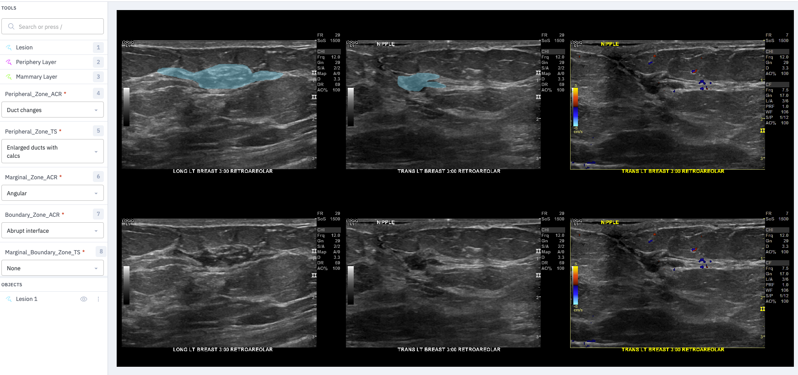

Data Pipeline
The Data Pipeline ( IRB: 10545.002 )
Below we describe the process for selecting, anonymizing, labeling, and preprocessing breast ultrasound images from Mayo so they may be used to train models locally at UW-La Crosse. It’s a rather cumbersome process and steps A, B, and C might be able to be done completely within Visage. Even step D might be launched from Visage
- Step A: - Data Acquisition and Deidentification (Datamart, Notion, Python)
- Part 1 – Identify relevant breast ultrasound studies
- Dr. Ellis uses Datamart (Mayo Clinic/Radiology/Breast Imaging Section: Dashboards) to get spreadsheet that includes MRN and Accession Numbers for studies from patients with prior breast ultrasound and ultrasound-guided breast biopsy
- Part 2 – Use Notion to pull dicom files from database to Mayo workstation using breast ultrasound accession number
- Python is used to parse Datamart spreadsheet into multiple Notion query spreadsheets (<= 100 studies each)
- Each Notion query spreadsheet is manually uploaded to Notion.
- Notion pulls the dicom files and partially removes PHI from the dicom headers. (no pixel level de-id)
- Manually download the partly deidentified dicom files from Notion to Mayo workstation
- Part 3 – Deidentification on Mayo workstation using Python to:
- clean dicom headers (saved locally as json files)
- black out portion of image with PHI
- save images locally as png files, videos are processed similarly
- accession numbers replaced with anonymized values and identification key saved locally as csv file
- non PHI summary info saved to separate csv file
- Part 1 – Identify relevant breast ultrasound studies
- Step B: Transfer Clinical Data from Mayo to UW-La Crosse
- breast ultrasound images, BI-RADS scores, and breast biopsy pathologies are transfered as png and csv files
- no PHI is transfered
- only anonymized data is shared via OneDrive
- Step C: Labeling (Python, Labelbox - see section at bottom of page)
- Part 1 – Most relevant images selection, to include best orthogonal views when possible
- Labelbox API and python used to upload studies for Dr. Ellis to choose best images
- Part 2 – Image Annotation and Segmentation
- Most relevant images combined locally into a single image panel which is uploaded to Labelbox queue
- Dr. Ellis uses dropdowns and segmentation tools in Labelbox to annotate and segment (see sample image near the end of this page)
- Segmentation masks and annotation data downloaded from Labelbox
- Part 1 – Most relevant images selection, to include best orthogonal views when possible
- Step D: Final Data Preparation
- Part 1 - Download masks and annotation from Labelbox
- Part 2 - Panels and annotations are processed locally using python. Including
- Extract pixel level text information about ultrasound probe orientation and left or right breast
- Crop the image to the largest rectangular region in the ultrasound part of the image
- Use a trained UNET segmentation model to identify and remove, via inpainting, pixel level annotations in the ultrasound image
- Add filenames, anonymized patient IDs, resolution, pathology, probe orientation, left/right, etc. to database
- Part 3 - Images, masks, and labels are added to local database.
Labeling with Labelbox
We upload a panel of 6 images to Labelbox. The two rows are the same images. The top row is used for segmentation (usually just the lesion is traced with a freehand tool), while the bottom row is maintained for reference. Dr. Ellis uses the drop down boxes to choose one label from each of the categories. In the future we want the radiologist to first select up to three images from each study: best two orthogonal views (without doppler) and best single doppler. The two non-doppler images will each need the lesion segmented and one or more labels selected within each of the categories. The doppler image will need only a single label.
The second row wouldn’t really be necessary if only a thin boundary for the segmentation mask was shown. The blue fill in Labelbox obscures the lesion too much to assess if the boundary is well drawn.
Here is a sample:
